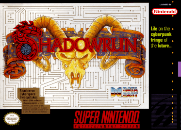
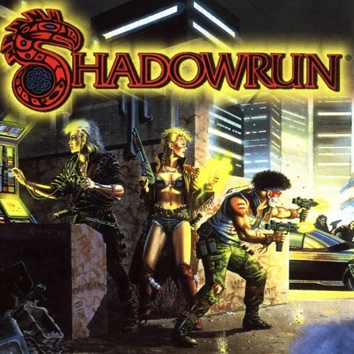
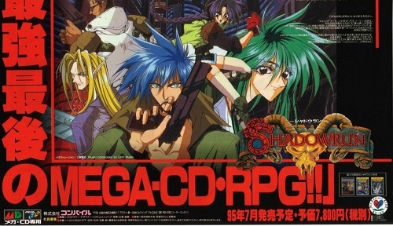
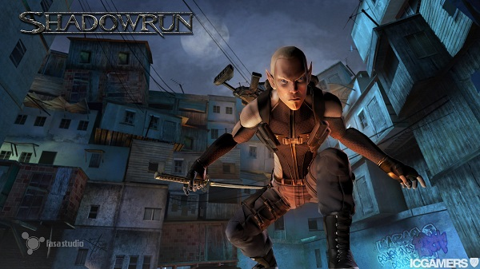
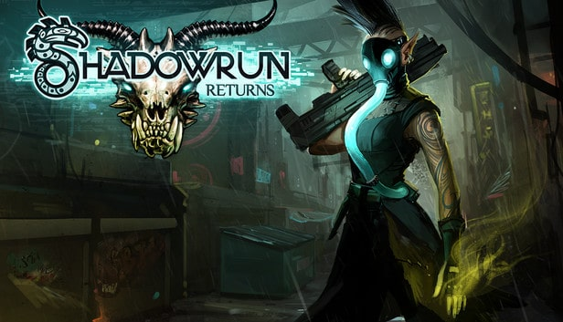
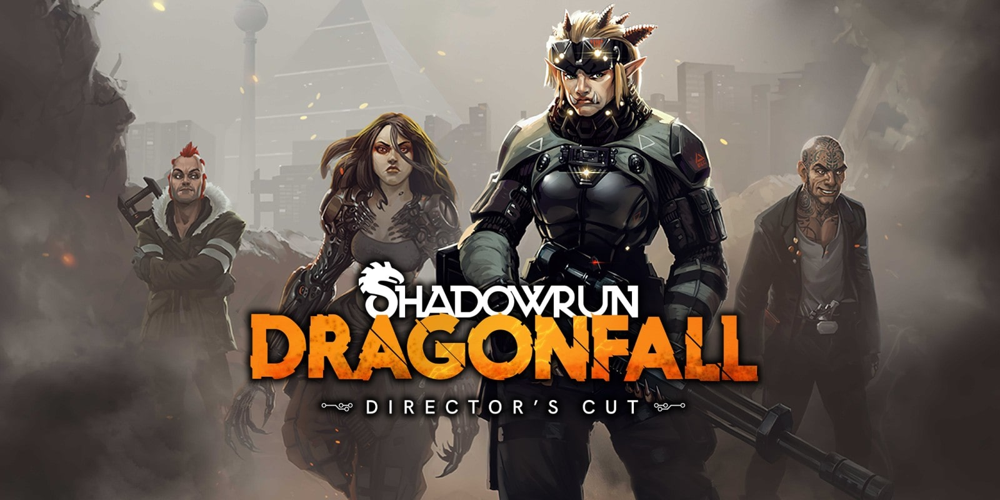
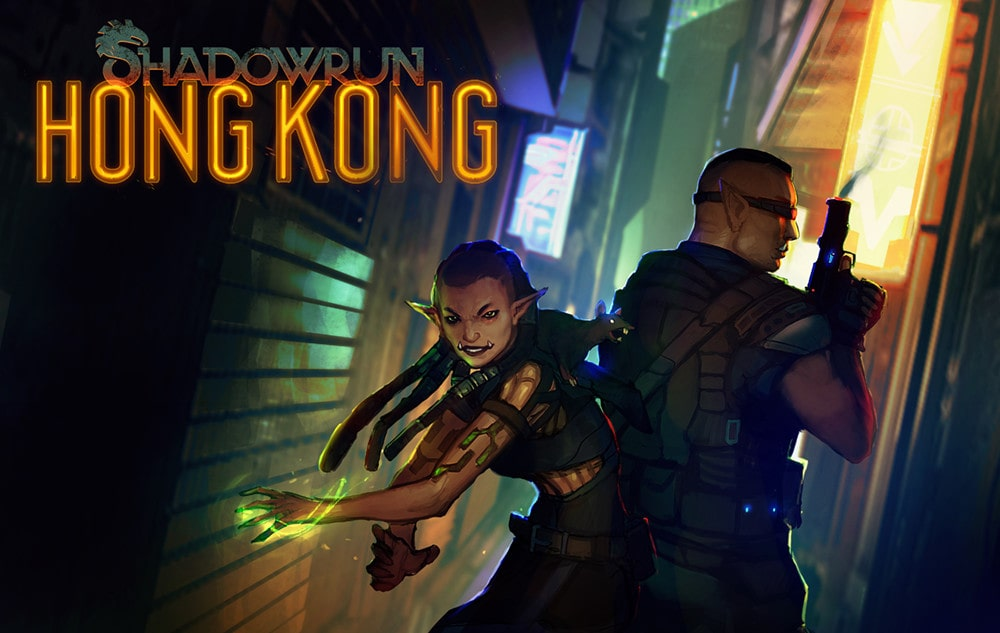

You ever completed a game and wished you could erase your memory and do it all again, experience the atmosphere, surprises and twists and turns all over again. This has been my experience thus far with Harebrained Schemes Shadowrun Trilogy.
...butttt let's not get ahead of ourselves eh. lets take it back all the way to the beginning, no seriously some of these are older than me :O
Shadowrun is a cyberpunk-fantasy action role-playing video game for the Super Nintendo Entertainment System, adapted from the tabletop role-playing game Shadowrun by FASA. The video game was developed by Australian company Beam Software and first released in 1993 by Data East.
The game is loosely based on the novel Never Deal with a Dragon by Shadowrun co-creator Robert N. Charrette and set in the year 2050. The player takes on the role of Jake Armitage, a man suffering from amnesia after having been critically wounded by assassins. The plot then follows Jake as he attempts to uncover his own identity and the identity of the mysterious figure who wants him dead, and eventually complete his mission. Harebrained Schemes' 2013 Shadowrun Returns links the stories of this game and of Shadowrun for the Sega Genesis.
Shadowrun is an action role-playing game for the Sega Genesis, released in 1994 in North America and Asia only. It was adapted from the cyberpunk role-playing game Shadowrun by FASA, and was developed by BlueSky Software. The game is the second video game adapted from Shadowrun, and has a more open ended style of gameplay than its 1993 Super NES counterpart, Shadowrun by Beam Software.
Shadowrun offers the player an open style of gameplay, where one controls the main character, Joshua, in a top-down third person perspective during both exploration and combat. Battles are real time, and although of varying difficulty, tend to be relatively short. Initially, the player is restricted to a single area of the game, but shortly gains access to almost all other areas. Access to other areas is accomplished primarily by taxi, although various restrictions and other modes of travel also exist, such as requiring a visa or bypassing the visa check with the use of a helicopter.
Shadowrun (シャドウラン, Shadouran) is a cyberpunk visual novel role-playing video game for the Sega Mega-CD adapted from the Japanese version of the pen and paper RPG Shadowrun by FASA (which was created by Group SNE). It was developed by Japanese company Compile and released on February 23, 1996 in Japan only as both the last Mega-CD game released in Japan and the last game released anywhere on the Mega-CD/Sega CD.
The game has a 1990s manga-based visual style loosely based on a contemporary Japanese manga series which was based on the Shadowrun franchise. Unlike the other Shadowrun video games which are set in Seattle and surrounding areas, this game is set entirely in Japan. In the fictional Shadowrun setting, Japan maintains a practice of exiling all orcs and trolls; thus there are no characters of those races in this game. The combat system is turn-based, and six-sided dice appear rolling on the screen determine the results of combat—the conflict resolution system used in the Shadowrun table-top game.
Shadowrun is a first-person shooter video game, developed by FASA Studio for Xbox 360 and Windows Vista. The game features a buying system which is inspired by the game Counter-Strike. The game is also inspired by the role-playing game of the same name.
Shadowrun's multiplayer consisted wholly of a first person/third person deathmatch. Players chose various races with unique abilities. Additionally, a currency system dictated in-match upgrades, with each race given a different amount of starting capital. The four playable races are Human, Elf, Dwarf, and Troll. Magic was a key component to this game as well. Players could heal, damage, teleport, and summon to gain advantages over others. Additionally, gadgets, or "tech", were obtainable through currency. Currency also allowed players to purchase new weapons.
Shadowrun featured no campaign mode. If a user was without online services, they could set up bot matches and hone their skills.
Back when Crossplay was unheard of... apparently (i didn't have an Xbox 360... or a PC... or Internet oof)
Shadowrun Returns is a tactical role-playing game developed and published by Harebrained Schemes. It takes place in the science fantasy setting of the Shadowrun tabletop role-playing game. The game was crowd funded through Kickstarter and released for Microsoft Windows, OS X, Linux, iOS, and Android in 2013.
An expansion pack titled Shadowrun: Dragonfall, was released in 2014. It was later converted to a standalone release, Shadowrun: Dragonfall - Director's Cut. In 2015, Harebrained Schemes launched another Kickstarter campaign to partially fund their next game, Shadowrun: Hong Kong. Similar to the Dragonfall - Director's Cut edition, Hong Kong was released in 2015 as a standalone release built using an upgraded version of the Shadowrun Returns engine. A remastered compilation game including Shadowrun Returns, Shadowrun Dragonfall: Director's Cut, and Shadowrun: Hong Kong, is released on Windows, Nintendo Switch, PlayStation 4, PlayStation 5, Xbox One, and Xbox Series X/S on June 21, 2022.
The player can customize their character's gender and appearance. There are five races to choose from: humans, elves, dwarves, orcs, and trolls. The game lacks traditional character classes, but players may optionally play as one of six pregenerated archetypes: street samurai, cybernetically-enhanced warriors who focus on weapon mastery; the spell-casting mages; deckers, who focus primarily on computer hacking; shamans, who summon spirits to assist them in battle; riggers, who control mechanical drones; and physical adepts, who are magically-enhanced monks.
As the story progresses, the player is given character points, known as "karma", to spend on improving their characters. If the player chose an archetype, it controls what skills and equipment the character starts with, but any character can gain any skill (e.g., deckers can spend karma to gain a shaman's summoning abilities). Besides the player character, up to three other characters can be hired during missions. Some non-player-characters are required during certain missions.
Shadowrun: Dragonfall is a tactical role-playing game developed by Harebrained Schemes set in the Shadowrun universe. It was originally released as downloadable content for Shadowrun Returns in February 2014. An expanded version was later released as a standalone game in September 2014, under the title Shadowrun: Dragonfall - Director's Cut. A remastered compilation game titled Shadowrun Trilogy that includes Shadowrun Returns, Shadowrun Dragonfall: Director's Cut, and Shadowrun: Hong Kong, launched on Windows, Nintendo Switch, PlayStation 4, PlayStation 5, Xbox One, and Xbox Series X/S on June 21, 2022.
Like Shadowrun Returns, Dragonfall uses point-based character creation, a classless system, and turn-based tactics. Players can hire mercenaries to assist them during missions as in the previous game, but the player is a part of a preexisting team, and these characters are always available. The Directors Cut adds optional missions to assist your teammates.
Shadowrun Chronicles: Boston Lockdown (originally marketed as Shadowrun Online) was a turn-based tactical video game developed by Cliffhanger Productions and published by Nordic Games as part of Jordan Weisman's cyberpunk Shadowrun fictional universe. With the servers shut down, the game stopped working on November 30, 2018.
Im so sad i didnt get to try this...
Shadowrun: Hong Kong is a turn-based tactical role-playing video game set in the Shadowrun universe. It was developed and published by Harebrained Schemes, who previously developed Shadowrun Returns and its standalone expansion, Shadowrun: Dragonfall - Director's Cut. It includes a new single-player campaign and also shipped with a level editor that lets players create their own Shadowrun campaigns and share them with other players.
In January 2015, Harebrained Schemes launched a Kickstarter campaign in order to fund additional features and content they wanted to add to the game, but determined would not have been possible with their current budget. The initial funding goal of US$100,000 was met in only a few hours. The campaign ended the following month, receiving over $1.2 million.
The game is set in 2056, within the Hong Kong Free Enterprise Zone, a city which is effectively controlled directly by the corporations. Unlike the previous games, the player has a backstory tied to other characters. The player was once an orphan on the streets of Seattle, along with their foster brother Duncan, when they were adopted by a man known as Raymond Black. However, the player became estranged from Raymond and Duncan after getting arrested and sent to a corporate prison eight years before the events of the game. After being released, the player gets a message from Raymond requesting that they and Duncan meet him in Hong Kong
